Dit is a self-hosted Handshake resolver that runs on your Umbrel. Point your router at it to cover your whole local network, or point just your phone or another single device at it.
Note: UmbrelOS is an open-source, Debian-based operating system designed to turn a computer, mini PC, Raspberry Pi or server into a user-friendly personal cloud and self-hosting hub. Its key features are a simple web interface easy to manage from your browser, and a plentiful App Store.
Installing Dit is as simple as installing any other Umbrel community app: go to App Store → Community App Stores → Manage, paste https://github.com/galetaire/dit and install Dit.
Dit runs hnsd, a Handshake light client. After installation, it starts from a checkpoint and needs 1 to 5 minutes to sync block headers. From then on, it verifies every Handshake answer against them.
Once it's synced, you can use it in two ways, chosen under Listening mode:
53.5300 and leaves port 53 to them.After choosing a mode, go to Set up devices and follow the instructions for the devices you want to use. The screenshots below show the process for a router and an Android phone, using the DNS server for your network mode.
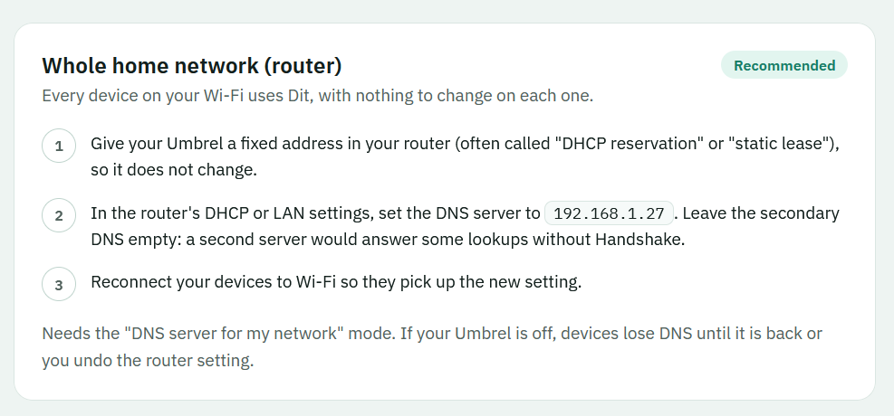
1 Router setup instructions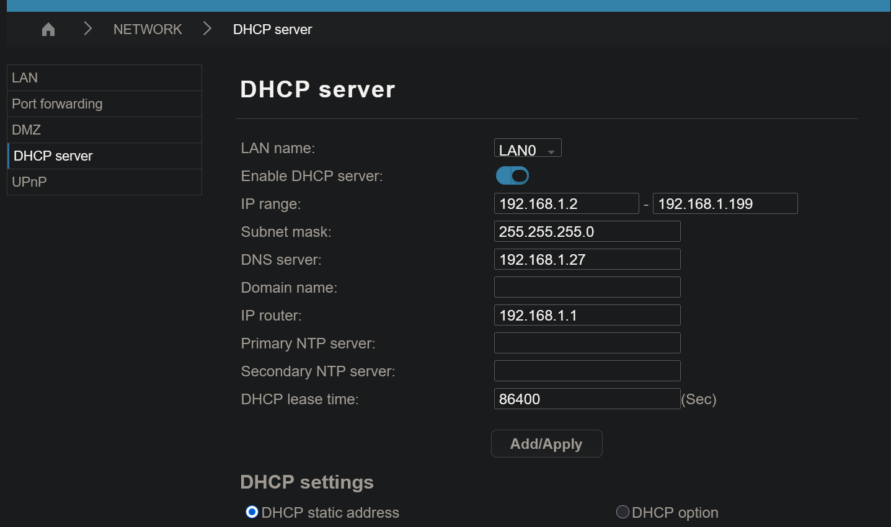
2 Router: give your Umbrel a fixed IP address and set it as your network's DNS server.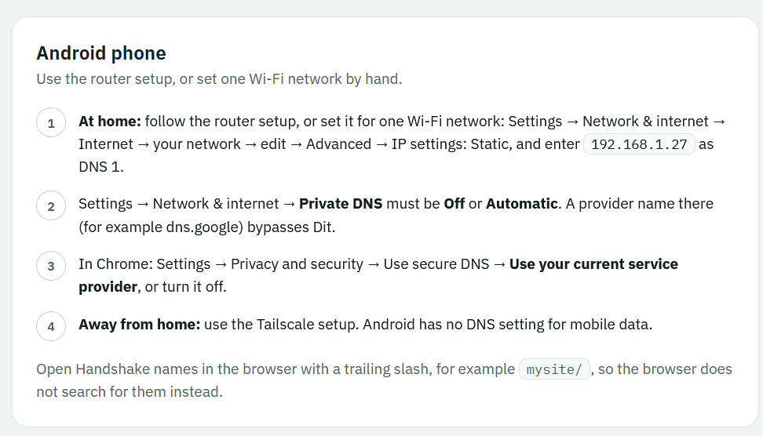
3 Android setup instructions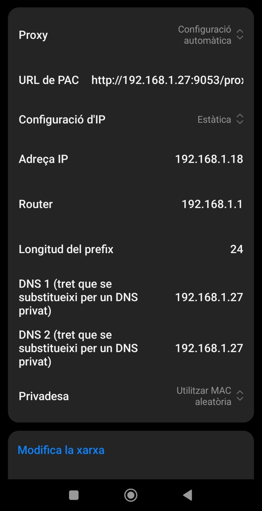
4 Android: set IP settings to Static and enter your Umbrel's IP address as the DNS.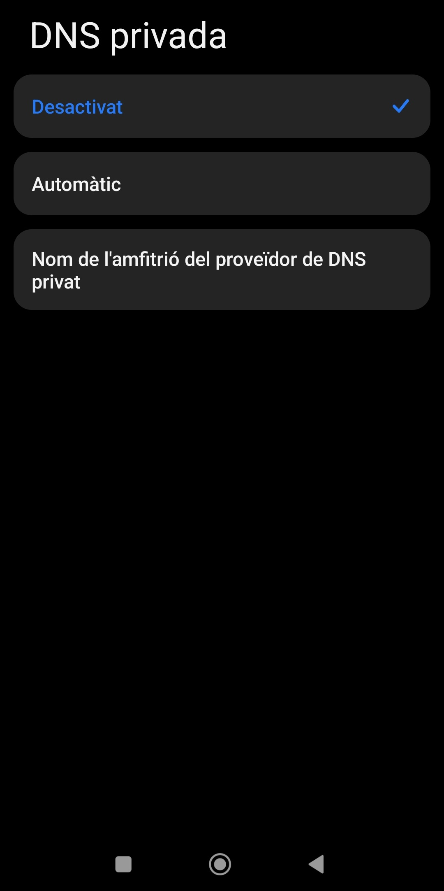
5 Android: make sure Private DNS is off. If you turn it on at any point, the Wi-Fi settings from the previous step will be erased and you'll have to enter them again.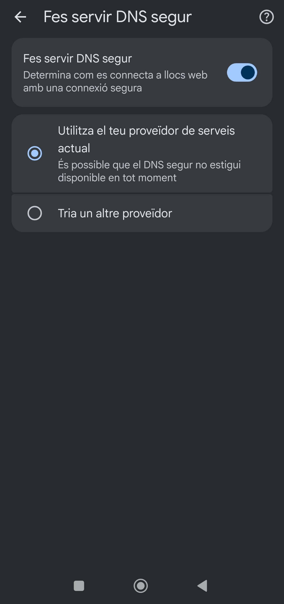
6 Android: set Use secure DNS to Use your current service provider.To open secure (HTTPS) sites, you need to set up a proxy and install the Dit certificate on each device. You'll find the setup instructions for each device at the bottom of the Secure sites page.
The screenshots below show how to set up the DANE proxy and certificate on a Windows 11 desktop and on an Android phone.
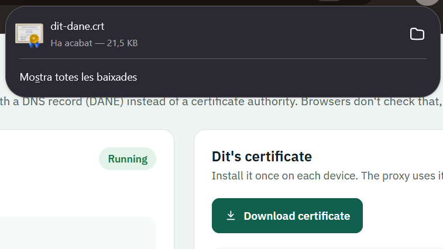
1 Windows 11, Chrome: download the Dit certificate.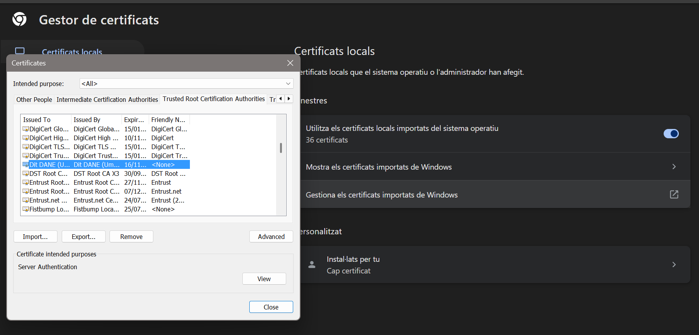
2 Windows 11, Chrome: install the Dit certificate in Windows. You can do this from Chrome's settings.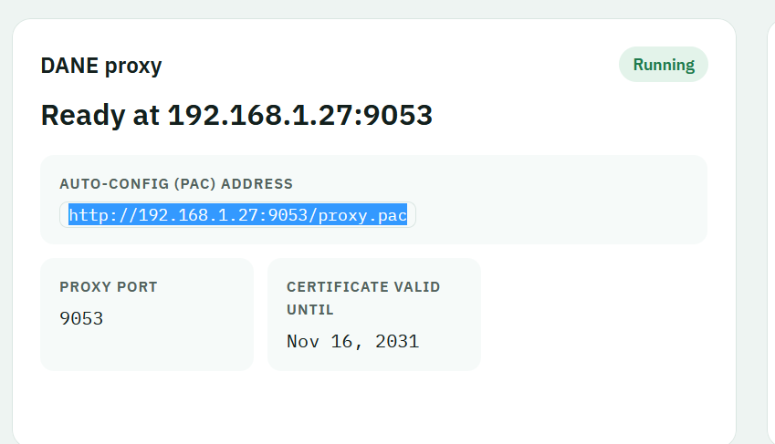
3 Windows 11, Chrome: copy the proxy address from Dit.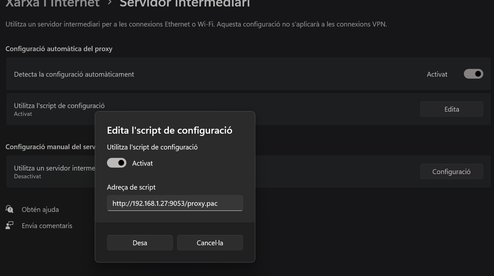
4 Windows 11, Chrome: add the address to the Windows proxy settings.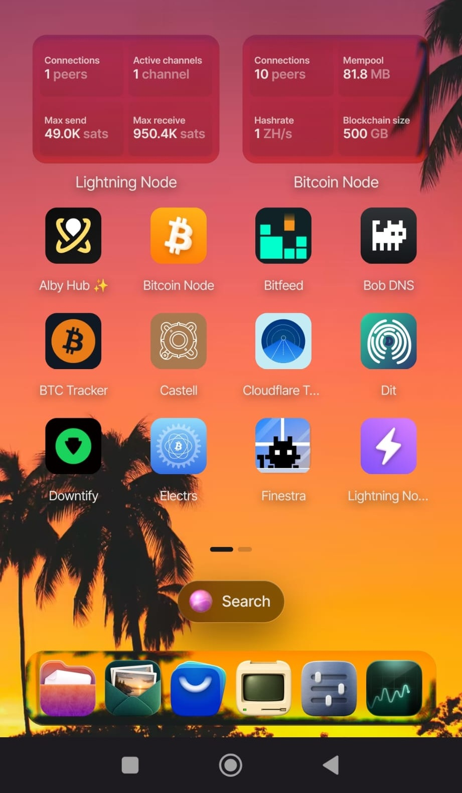
5 Android: open Dit on your phone.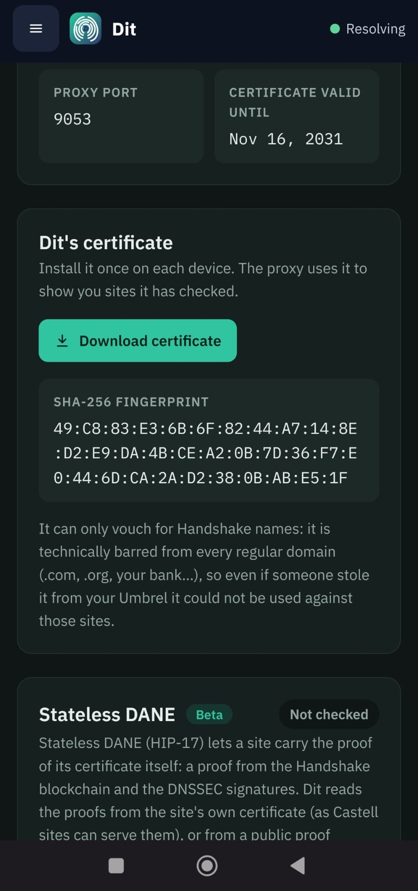
6 Android: download the Dit certificate to your phone.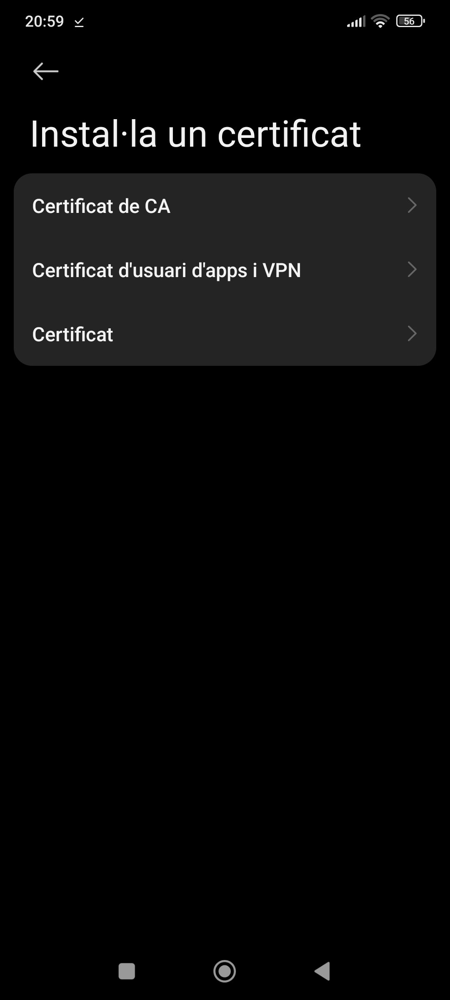
7 Android: go to CA certificates in your phone's settings. The exact path depends on the phone brand.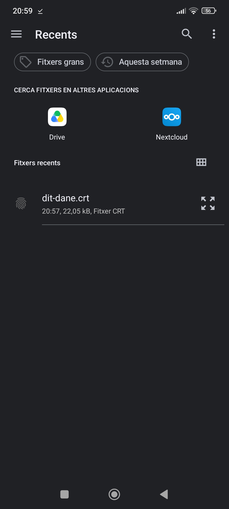
8 Android: install the certificate you just downloaded. If you haven't yet set IP settings to Static and entered your Umbrel's IP address as the DNS, do it now too. 9 Firefox for Android: open the Secret settings and turn on Use third party CA certificates
9 Firefox for Android: open the Secret settings and turn on Use third party CA certificates
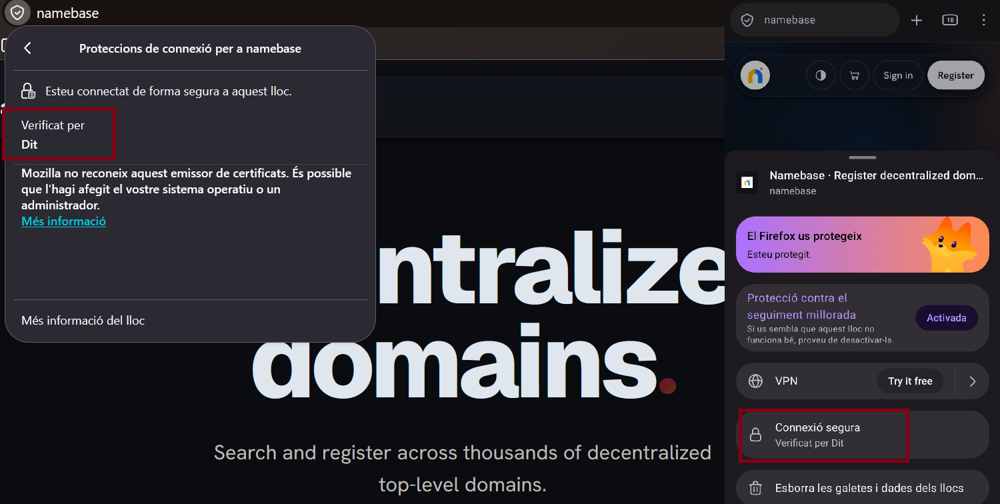
10 Firefox for Android: sites should show as secure, with a certificate issued by Dit.As you'll see, there is also a beta feature to validate Stateless DANE (SANE). SANE is still quite experimental, and as far as I know, few sites support it yet. If you also use the Castell app to host your sites, Castell has a beta feature that generates the proofs your sites need to support SANE.
What's the difference between DANE and SANE?
| Plain DANE (Dit's proxy today) | SANE (what Castell now embeds) | |
|---|---|---|
| What the client needs | A trusted resolver that does DNSSEC: hnsd asking Handshake peers for proofs, plus DNSSEC lookups for each site | Only the recent tree roots, a few KB, refreshed at most weekly |
| Lookups when you open a site | Proof requests to peers, then DNSKEY, DS and TLSA lookups | None for verification; only an untrusted address lookup, which can go over encrypted DNS |
| Privacy | Handshake peers and resolvers see which names you visit | Nobody learns more than from an ordinary encrypted address lookup |
| Reliability | Fails if peers or nameservers are slow or blocked | Works as long as the site itself responds |
| Where it works | Only where a trusted resolver is reachable: at home, through Dit | Anywhere: mobile data, public Wi-Fi, networks that block Handshake |